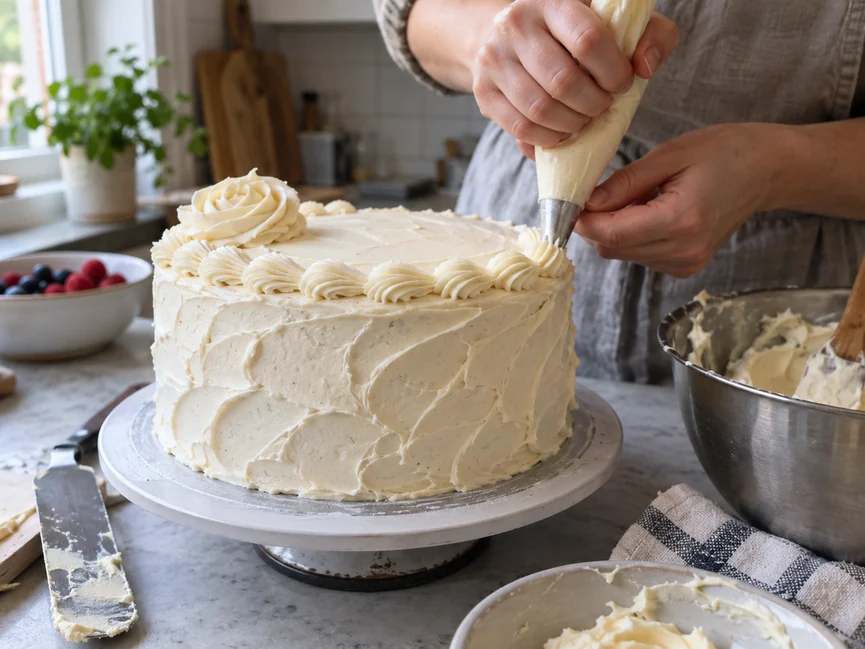
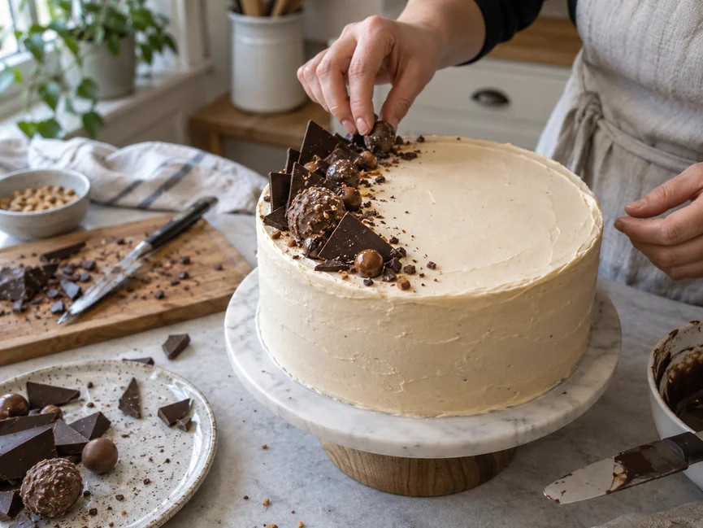
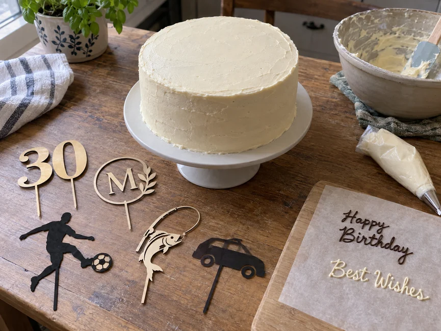
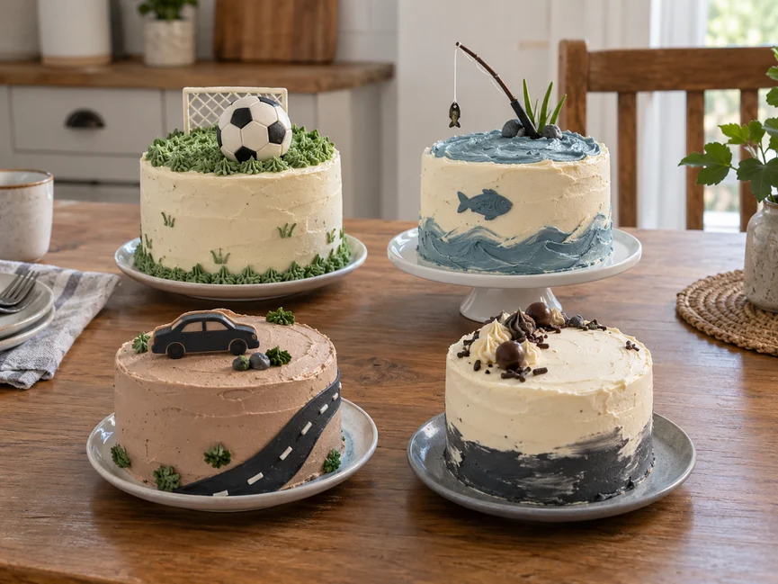
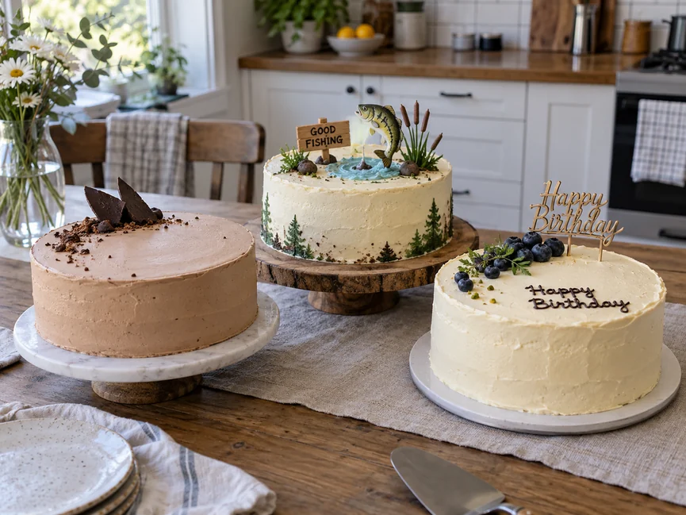

Прикрашання торта для чоловіка не обов’язково має бути складним. Навіть удома можна зробити акуратне оформлення з крему, шоколаду, солодощів, ягід або простого тематичного декору.
Спочатку виберіть одну основну ідею. Потім визначте головний акцент — наприклад, напис, топер, шоколадну композицію або тематичну деталь — і додайте до нього 1–2 допоміжні елементи. Такий підхід майже завжди виглядає акуратніше, ніж велика кількість різного декору.
Як вибрати оформлення чоловічого торта
Почніть не з конкретних прикрас, а із загальної ідеї. Один і той самий торт можна оформити стримано, з гумором, тематично або зовсім лаконічно.
Враховуйте привід
Для звичайного дня народження підійде більш вільне оформлення: шоколад, солодощі, напис, топер або невеликий декор за інтересами чоловіка.
Для ювілею часто вибирають більш стриману композицію з віком, ім’ям або коротким привітанням. Але суворих правил тут немає — важливіше, щоб оформлення підходило самій людині.
Відштовхуйтеся від інтересів чоловіка
Хорошою основою для ідеї можуть стати футбол, риболовля, автомобілі, подорожі, музика, професія або інше захоплення.
Не обов’язково перетворювати весь торт на складну тематичну сцену. Іноді достатньо одного великого впізнаваного елемента, кількох невеликих деталей і відповідної кольорової гами.
Враховуйте складність оформлення
Якщо ви прикрашаєте торт уперше, простіше використовувати готові солодощі, шоколад, ягоди, топер, простий напис або нескладний кремовий декор.
Об’ємні фігурки з мастики та складні композиції краще вибирати лише тоді, коли є час зробити деталі заздалегідь і спокійно зібрати оформлення.
Чим прикрасити торт для чоловіка своїми руками
Для домашнього оформлення не потрібен великий набір професійного декору. Часто достатньо кількох простих елементів, які добре поєднуються між собою.
Кремом
Крем підходить і для повного покриття, і для невеликого декору. Можна зробити рівну поверхню одного кольору, додати бордюр, кілька розеток або фактурні мазки лопаткою.
Спокійні відтінки часто виглядають доречно, але це не обов’язкове правило. Якщо поверхня вийшла неідеальною, краще використати акуратну фактуру, ніж намагатися приховати всі нерівності великою кількістю прикрас.

Шоколадом
Для оформлення підійдуть шоколадна стружка, шматочки плитки, цукерки, тонкі шоколадні елементи, написи, патьоки або крихта на боках.
Щоб композиція не виглядала випадковою, виберіть один основний вид шоколадного декору й додайте до нього кілька невеликих елементів.

Солодощами та печивом
Батончики, печиво, драже, вафлі й невеликі цукерки зручно використовувати для швидкого домашнього декору.
Їх можна зібрати в одну компактну композицію збоку або ближче до краю торта, а не розподіляти рівномірно по всій поверхні.
Порада!
Не заповнюйте солодощами все вільне місце лише тому, що воно залишилося. Невелика асиметрична композиція часто виглядає акуратніше й сучасніше.
Ягодами та фруктами
Ягоди добре поєднуються з кремом і шоколадом. Для чоловічого торта зовсім не обов’язково робити пишну фруктову композицію — кілька акуратно розміщених ягід можуть працювати як додатковий акцент.
Свіжий декор краще додавати ближче до подачі й зберігати готовий торт з урахуванням вимог конкретного крему та начинки.
Топерами та написами
Топер — один із найпростіших способів зробити оформлення тематичним.
Це може бути ім’я, вік, коротке привітання, силует автомобіля, футбольна тема, риболовля, професія або символ хобі.
Якщо топер великий і помітний, іншого декору зазвичай потрібно менше.

Мастикою
З мастики можна зробити фігурки, символи, написи й тематичні деталі. При цьому зовсім не обов’язково повністю покривати нею весь торт.
Невеликий мастичний декор можна використовувати як один з акцентів на відповідному покритті.
Якщо хочеться зробити більш конкретне оформлення, наприклад торт у вигляді смокінга з краваткою-метеликом, у нас є окремий покроковий майстер-клас «Як прикрасити торт на день народження чоловікові».
Як оформити чоловічий торт без мастики
Мастика для красивого чоловічого торта зовсім не обов’язкова.
Найпростіший варіант — рівне кремове покриття, шоколад і один тематичний елемент. Можна залишити основну поверхню майже вільною, а весь декор зібрати з одного боку.
Добре виглядає й мінімалістичний варіант: гладкий крем, короткий напис і невеликий акцент зверху.
Ще один простий прийом — контраст світлого й темного: наприклад, світлий крем і шоколадний декор або навпаки.

Ідеї тематичного оформлення
Спорт і футбол
Для футбольної теми можна використати зелене покриття, лінії поля, м’яч, тематичний топер або невеликі декоративні елементи.
Якщо хочеться зробити повноцінний торт у вигляді футбольного поля, це вже окрема робота: там важливі форма, розмітка та послідовність оформлення.
Риболовля та інші хобі
Для рибалки підійдуть зелені, блакитні й коричневі відтінки, силует риби, поплавок, вудка або тематичний напис.
Той самий принцип працює й з іншими захопленнями: краще вибрати кілька впізнаваних елементів, ніж намагатися показати на одному торті все одразу.
Автомобілі, робота та професія
Автомобільну тему можна позначити силуетом машини, дорожнім знаком, номерним знаком або топером.
Для професійного оформлення підійдуть прості символи роботи: інструмент, каска, ноутбук, музичний інструмент або інший добре впізнаваний предмет.
Лаконічний дизайн
Не кожен чоловічий торт має бути тематичним.
Однотонне покриття, невеликий напис, шоколад, геометричні деталі й один додатковий колір часто виглядають достатньо виразно та підходять і для дня народження, і для ювілею.

Що написати на торті чоловікові
Короткий напис зазвичай виглядає краще за довгий текст.
На торті можна залишити ім’я, вік, просте «З днем народження!», коротке побажання, сімейне звертання або невеликий жарт, якщо він зрозумілий винуватцю свята.
Якщо хочеться написати багато слів, краще винести довге привітання на листівку або окремий топер, а на самому торті залишити тільки головну фразу.
Як зробити оформлення акуратним у домашніх умовах
Спочатку визначте головний елемент композиції. Це може бути топер, напис, шоколадний декор або тематична фігурка.
Великі елементи встановлюйте першими, а дрібні додавайте після них. Так простіше контролювати композицію й не перевантажувати поверхню.
Залишайте вільне місце. Порожній простір — це частина оформлення, а не ділянка, яку обов’язково потрібно чимось заповнити.
Для простої домашньої композиції зазвичай достатньо двох основних кольорів і одного додаткового акценту.
Важкий декор встановлюйте лише на достатньо стійку поверхню та з надійною опорою.
Важливо!
Перед установленням декору повністю підготуйте сам торт і покриття. Виправляти поверхню навколо вже закріплених елементів набагато складніше.

Часті помилки під час оформлення чоловічого торта
Одна з найчастіших помилок — спроба використати одразу всі ідеї, які сподобалися. Шоколад, ягоди, цукерки, топер, напис і тематичні фігурки окремо можуть виглядати добре, але разом легко перетворюються на перевантажену композицію.
Друга помилка — надто буквально передавати тему. Для рибалки не обов’язково ліпити ціле озеро, а для автомобіліста — повноцінну машину. Іноді одного впізнаваного символу цілком достатньо.
Третя помилка — вибирати складне оформлення лише тому, що воно красиво виглядає на фотографії. Домашній торт виграє не від кількості технічних прийомів, а від акуратності виконання.
Категорично не робіть!
Не встановлюйте важкий декор, якщо не впевнені, що покриття й конструкція торта його витримають. Краще зменшити елемент або замінити його легшим.
Ідеї чоловічих тортів за темою
Коли загальну ідею вже вибрано, можна переходити до конкретного дизайну.
Один із варіантів — класичний торт-смокінг із сорочкою та краваткою-метеликом. Для нього в нас уже є окремий покроковий майстер-клас.
Окремими матеріалами також будуть розібрані торт у вигляді футбольного поля та оформлення торта для рибалки.
Але для звичайного домашнього торта складна тема потрібна далеко не завжди. Акуратне покриття, один головний акцент і кілька додаткових деталей уже можуть дати завершений результат.
